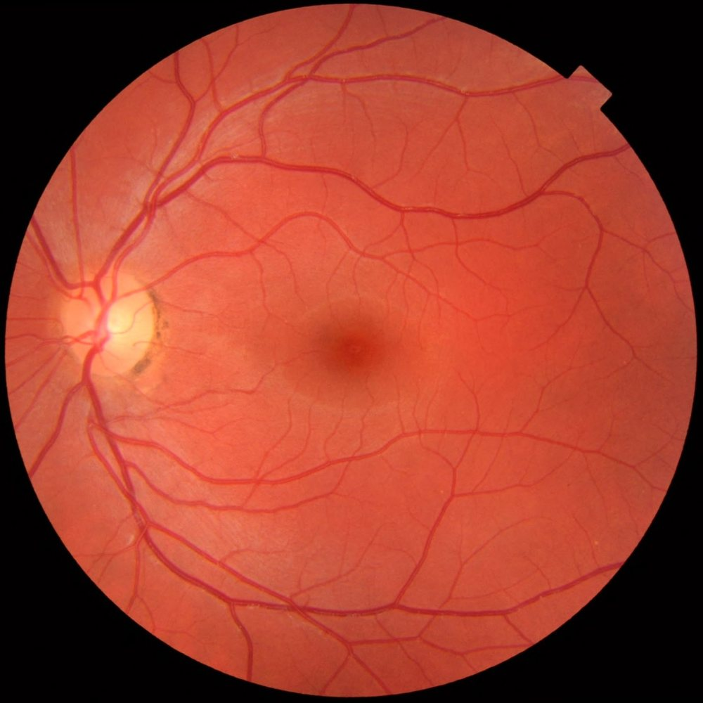
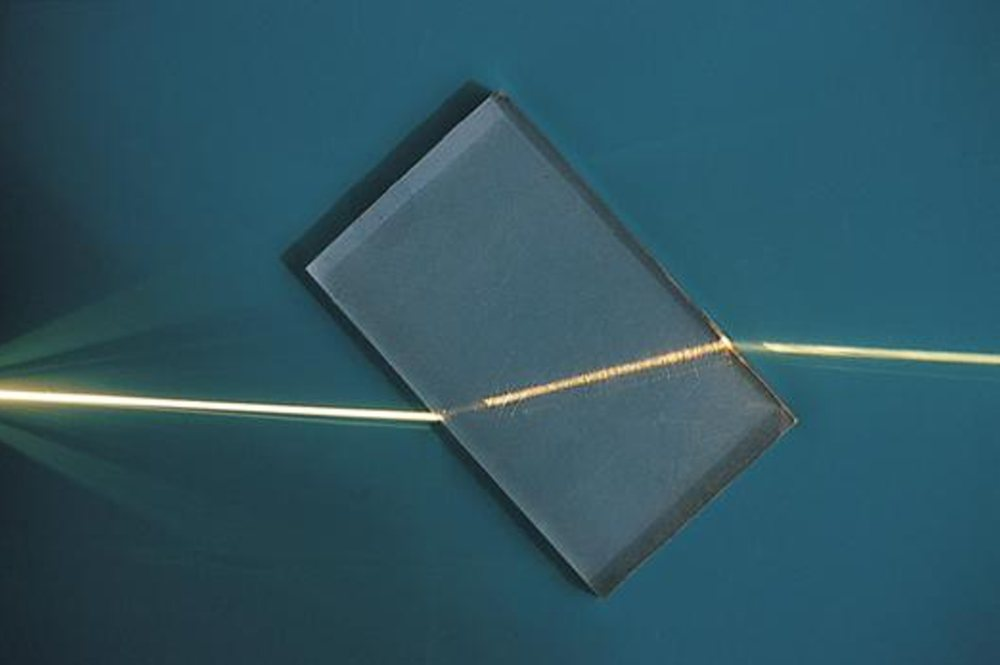

Licht läuft geradeaus. Die Strahlen kreuzen sich in der Linse: oben landet unten. Das Bild ist umgekehrt, seitenverkehrt und verkleinert – wie bei einer Lochkamera.
② Netzhaut: Licht → Strom
0Mio.Stäbchen: hell/dunkel
0Mio.Zapfen: rot, grün, blau

Licht ändert einen Sehfarbstoff → chemische Kettenreaktion → elektrisches Signal.
③ Das Gehirn macht daraus Sehen
Sehnerv → Sehnervenkreuzung → Sehrinde im Hinterkopf. Das Gehirn deutet das Bild richtig, macht aus 2 Augen 3D und erkennt es mit dem Gedächtnis.
3 · Kurz- und Weitsichtigkeit
Wo treffen sich die Strahlen ohne Brille?
Normal
Treffpunkt genau auf der Netzhaut → scharf.
Kurzsichtig
Ferne unscharf (Tafel). Treffpunkt vor der Netzhaut. Auge zu lang oder Brechkraft zu stark.
Weitsichtig
Nähe unscharf (Handy). Treffpunkt hinter der Netzhaut. Auge zu kurz oder Brechkraft zu schwach.
0mm = 3 dpt
Statt eines Punktes kommt ein Fleck an (Unschärfekreis). Schon 1 mm zu langes Auge ≈ 3 Dioptrien kurzsichtig.
4 · Wie funktioniert eine Brille?
Brechung, Linsen und Dioptrien
Warum knickt Licht im Glas ab?

In Glas ist Licht langsamer (≈ 200 000 statt 300 000 km/s). Trifft es schräg auf, wird eine Seite zuerst gebremst → der Strahl knickt ab = Brechung. Wie ein Auto, das schräg auf eine Wiese fährt.
0dptBrechkraft des ganzen Auges – ⅔ davon schafft die Hornhaut
Licht knickt immer zur dickeren Stelle des Glases.
Brechkraft in Dioptrien: D = 1 / f
+2,5 dpt
Plus = Sammellinse (Mitte dick, konvex) · Minus = Zerstreuungslinse (Rand dick, konkav)
4 · Wie wird das Bild wieder scharf?
Die Brille schiebt den Treffpunkt auf die Netzhaut
Kurzsichtig → Minusglas
Die Zerstreuungslinse spreizt die Strahlen vorher etwas → sie treffen sich später, genau auf der Netzhaut.
Weitsichtig → Plusglas
Die Sammellinse bündelt die Strahlen vorher etwas → sie treffen sich früher, genau auf der Netzhaut.
Kurz – Konkav – Minus · Weit – Wölbung – Plus
Zusammenfassung
Das Wichtigste in 30 Sekunden
Kurzsichtig (Myopie)
Weitsichtig (Hyperopie)
Unscharf
in der Ferne
in der Nähe
Treffpunkt ohne Brille
vor der Netzhaut
hinter der Netzhaut
Ursache
Auge zu lang / Brechkraft zu stark
Auge zu kurz / Brechkraft zu schwach
Brille
Zerstreuungslinse, konkav, Minus
Sammellinse, konvex, Plus
Hornhaut & Linse bündeln das Licht → umgedrehtes Bild auf der Netzhaut → Stäbchen & Zapfen machen Signale → das Gehirn macht daraus Sehen.
Fragen?
Bilder: Wikimedia Commons – Laser im Glasblock: ajizai (gemeinfrei); Netzhaut-Foto: Mikael Häggström (CC0). 3D-Modelle, Strahlengänge und Effekte: selbst erstellt.